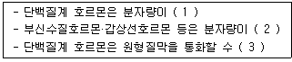
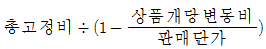
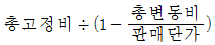
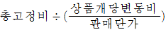
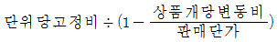

축산산업기사 (2017-09-23 기출문제)
1과목: 가축번식 육종학
1. ACTH 나 FSH와 같이 뇌하수체 전엽에 분비 되는 호르몬이 직접 뇌하수체 전엽에 작용하여 자신의 분비 기능을 조절하는 작용은?
- Positive feedback
- Negative feedback
- Auto feedback
- Ultra-short feedback
(정답률: 77%)

2. 뇌하수체 전엽호르몬으로 배란과 가장 관계가 깊은 것은?
- 난포자극호르몬
- 난포흐로몬
- 프로락틴
- 황체형성 호르몬
(정답률: 65%)
3. 다음 중 내분비선 난소의 호르몬이 아닌 것은?
- 에스토로겐
- 프로락틴
- 프로게스테론
- 릴랙신
(정답률: 61%)
4. 개체선발에 대한 설명으로 옳지 않은 것은?
- 유전력이 높은 형질의 개량에 효과적이다.
- 도살하여야만 측정할 수 있는 형질에서는 실시할 수 없다.
- 가능한 한 동일한 사량 관리 조건하에서 사육하여야 한다.
- 수소의 산유량 개량에 효과적이다.
(정답률: 74%)
5. 난자의 생산과 이동경로가 올비르게 연결된 것은?
- 난소 - 난관팽대부 - 난관채 - 난관협부 - 난관자궁접속부 - 자궁
- 난소 - 난관채 - 난관팽대부 - 난관협부 - 난관자궁접속부 - 자궁
- 난소 - 난관채 - 난관협부 - 난관팽대부 - 난관자궁접속부 - 자궁
- 난소 - 난관협부 - 난관팽대부 - 난관채 - 난관자궁접속부 - 자궁
(정답률: 74%)
6. 소의 분만과정 중 제2파수는 어느 부위에서 유래된 것인가?
- 요막
- 맥락막
- 영양막
- 양막
(정답률: 73%)
7. 선발에 의한 유전적 개량량을 크게 할 수 있는 방법이 아닌 것은?
- 선발차를 크게 한다.
- 세대간격을 짧게 한다
- 환경적 변이가 높아야 한다.
- 형질의 유전력이 높아야 한다.
(정답률: 82%)
8. 다음 중 육우의 경제형질과 가장 거리가 먼 것은?
- 번식효율 및 도체품질
- 이유시 체중
- 산자수 및 외모
- 사료 효율
(정답률: 73%)
9. 가축별로 가장 많이 사용되는 임신 진단방법으로 틀리게 연결된 것은?
- 말 : 유즙내 프로게스테론 농도 측정
- 소 : 직장 검사
- 돼지 : 초음파 검사
- 면양 : Non-return법
(정답률: 70%)
10. 가축의 번식적령기로 옳지 않는 것은?
- 소 - 14 ~ 22개월 령
- 말 - 24 ~ 48개월 령
- 돼지 - 18 ~ 20개월 령
- 면양 - 9 ~ 18개월 령
(정답률: 78%)
11. 소의 품종 중 임신기간이 가장 긴 것은?
- Brahaman종
- 한우
- Aberdeen Angus종
- Holstein종
(정답률: 66%)
12. 혈통선발의 장점이 아닌 것은?
- 선발하는 데 비용이 적게 든다.
- 어린 가축에서도 선발이 가능하다.
- 측정에 오랜 시일이 소요되는 형질의 개량에 쓰인다.
- 다른 선발 방법에 비하여 정확도가 높다.
(정답률: 56%)
13. 젖소의 산유능력을 개량하려 할 때 가장 효과적인 선발법은?
- 개체선발
- 가계선발
- 후대검정
- 형매검정
(정답률: 61%)
14. 돼지의 발정 징후에 해당하는 것은?
- 식욕이 감퇴하고 반추가 줄어들거나 거의 중단된다.
- 승가를 허용하고, 외음부의 충혈과 점액 누출이 있다.
- 꼬리를 흔들며 외음부의 충혈과 점액 누출은 없다.
- 외음부의 음순 수축에 따른 개폐로 라이트닝(lightening)을 2~3분간 주기적으로 반복한다.
(정답률: 82%)
15. 가축들의 교배적기에 관한 설명으로 옳지 않은 것은?
- 소는 발정중기부터 발정종료 후 6시간 경까지이다.
- 돼지는 수퇘지의 승가를 허용하는 시점으로부터 10~25시간 사이이다.
- 면양은 발정개시 후 20~25시간 전후이다.
- 말은 직장검사를 한 경우 배란와(ovulation fossa)가 닫혀 있는 시기로 배란 후 3일째이다.
(정답률: 68%)
16. 다음 중 임신말기에 주사하여 분만을 유기할 수 있는 호르몬은?
- FSH(난포자극 호르몬)
- LH(황체형성 호르몬)
- Progesterone(프로게스토론)
- PGF2a
(정답률: 76%)
17. 순종교배에 대한 설명으로 옳지 않은 것은?
- 품종의 특징을 유지하면서 축군의 능력을 향상시키기 위해 이용하는 방법이다.
- 무작위교배, 근친교배, 동일품종내의 이계교배 등이 있다.
- 순종 가축의 유전적 순수성 유지를 위해 가축의 품종에 대한 등록제도를 실시한다.
- 품종형성과정 또는 품종유지과정에서 근교계수는 점차 낮아지게 된다.
(정답률: 78%)
18. 산란계의 선발요건이 아닌 것은?
- 다산일 것
- 체형이 클 것
- 사료효율이 좋을 것
- 난중이 무거울 것
(정답률: 80%)
19. 태아를 둘러싸고 있는 태막에서 가장 안쪽에 있는 막은?
- 양막
- 요막
- 융모막
- 융모막요막
(정답률: 69%)
20. 다음 중 (1), (2), (3)에 들어갈 내용으로 알맞은 것은?

- 1 : 작다, 2 : 작다, 3 : 있다
- 1 : 작다, 2 : 크다, 3 : 있다
- 1 : 크다, 2 : 작다, 3 : 없다
- 1 : 크다, 2 : 크다, 3 : 없다
(정답률: 73%)
2과목: 가축사양학
21. 다음 중 산란계에서 산란에 필요한 조단백질의 양에 가장 큰 영향을 주는 것은?
- 체중
- 사료의 열량
- 산란율
- 난중
(정답률: 61%)
22. 유성분 및 유량생산에 대한 설명으로 옳지 않은 것은?
- 유지율을 높이기 위하여 양질의 조사료를 사용한다.
- 유량을 높이기 위하여 에너지 사료를 보충급여 한다.
- 유량을 높이기 위하여 사료 내 조사료의 비율을 높이다.
- 유지율 높이기 위하여 반추위 보호지방을 급여한다.
(정답률: 63%)
23. 영양소에 의해 사료를 분류 하였을 때 지방질 사료인 것은?
- 대부닥
- 탤로우(Tallow)
- 어분
- 분유
(정답률: 71%)
24. 다음 중 육우의 비육에 영향을 미치는 요인이 아닌 것은?
- 가축의 품종의 연령
- 비타민 D
- 영양수준과 환경온도
- 가축의 성별
(정답률: 73%)
25. 알팔파 사일리지에 급여상태기준으로 조단백질이 7% 건물이 40% 들어 있다면 건물기준으로 표현할 때 알팔파 사일리지 조단백질 함량은 몇%인가?
- 16.5%
- 20.5%
- 18.5%
- 17.5%
(정답률: 50%)
26. 사료 중 조단백질은 질소(N)함량에 6.25를 곱하여 구하기 때문에 여려 가지 성분이 함유된다. 조단백질 정량에 함유되지 않는 성분은?
- 단백질
- 아미노산
- 비단백태질소
- 가용무질소물
(정답률: 60%)
27. 돈육 중 지방의 품질에 영향을 가장 적게 미치는 것은?
- 사료 및 사육방법
- 도살 전후의 부적절한 관리
- 돼지 품종 및 계통
- 성에 따른 체지방의 생산능력 차이
(정답률: 71%)
28. 다음 중 일반적이 사양관리시 한우 비육우의 일당증체량이 가장 높은 시기에 해당하는 것은?
- 육성기
- 비육전기
- 비육중기
- 비육후기
(정답률: 68%)
29. 산란계의 일일 Ca의 요규량이 3g인 경우, 배합사료로 Ca을 2g 급여하고 부족한 양 1g은 석회석으로 추가 공급하려 한다면 석회석으로 얼마나 공급해야 하는가? (단, 석회석의 Ca 함량은 37% 임)
- 2.7g
- 2.9g
- 3.1g
- 3.3g
(정답률: 58%)
30. 다음 중 젖소의 비유단계에 있어서 영양소의 요구량이 가장 높은 시기는?
- 비유초기
- 비유중기
- 비유말기
- 건유기
(정답률: 55%)
31. 다음 중 목초의 생육시기가 진행됨에 따른 변화에 대한 설명으로 틀린 것은?
- 조단백질 감소
- 소화율 증가
- 조섬유 증가
- 소화율 감소
(정답률: 65%)
32. 다음 중 정미에너지(net energy)를 가장 바르게 설명한 것은?
- 사료 내 함유하고 있는 에너지의 총량
- 사료 내 함유 에너지에서 분으로 배출되는 에너지를 제외한 나머지 에너지의 총량
- 사료 내 함유 에너지에서 분, 뇨, 가스로 손실된 에너지를 제외한 나머지 에너지의 총량
- 사료 내 함유 에너지에서 분, 뇨, 가스 및 열방생으로 손실되 에너지를 제외한 나머지 에너지의 총량
(정답률: 77%)
33. 일반적으로 한우의 모유 포유시 가장 적절한 이유시기는?
- 초유만 급여하고 즉시
- 생후 1개월 후
- 생후 4개월 후
- 생후 8개월 후
(정답률: 60%)
34. 비육우의 효과를 높이기 위한 조건이 될 수 없는 것은?
- 조숙성일 것
- 조비성일 것
- 사료의 이용성이 높을 것
- 다산성일 것
(정답률: 66%)
35. 젖소의 비유초기에 대한일번적인 특징이 아닌 것은?
- 유량이 최고기가 일어나는 시기이다.
- 케톤체와 지방간 등 대사성질병이 잘 일어난다.
- 신체충실지수(BCS)가 감소한다.
- 사료섭취량이 계속 감소한다.
(정답률: 69%)
36. 착유우 사료에 요소를 이용하는 경우 적절한 방법이 아닌 것은?
- 농후사료에 2%이상 사용하지 않는다.
- 총 사료단백질 중 1/3을 초과하지 않는다.
- 1일 두당 0.2kg 이상 사용하지 않는다.
- 사료 중의 TDN 함량이 낮을 때 요소이용량을 높여 사용한다.
(정답률: 76%)
37. 젖소가 수분 12%인 배합사료 6kg과 수분 70%인 사일리지 30kg을 섭취했을 때 건물기준으로 조사료 : 농후사료의 섭취비율은? (단, 소수점은 반올림하시오.)
- 30 : 70
- 63 : 37
- 40 : 60
- 50 : 50
(정답률: 62%)
38. 다음 중 1일 평균 물의 요구량이 가장 높은 것은?
- 육성기 한우
- 비육휴기 육우
- 착유중인 젖소
- 육성기 말
(정답률: 83%)
39. 가금용 원료사료 중 식물성 박류의 이용에 있어 가장 부족되기 쉽고 특히 열처리에 의해 이용률이 가장 크게 저하되는 필수아미노산은?
- 아르기닌(arginine)
- 라이신(lysine)
- 히스티딘(histidine)
- 발린 (valine)
(정답률: 73%)
40. 유지 단백질 요구량을 결정하는 요인과 거리가 먼 것은?
- 내생뇨질소법
- 질소균형법
- 사량시험법
- 기초대사율
(정답률: 57%)
3과목: 축산경영학
41. 축사경영에 필요한 토지의 경제적 성질에 해당되지 않는 것은?
- 불가증성
- 불가동성
- 배양성
- 불소모성
(정답률: 69%)
42. 다음 중 축산물의 생산과 관련된 설명으로 옳지 않는 것은?
- 사료, 농기계, 약품, 노동력, 토지 등은 생산요소이다.
- 우유, 고기, 털, 가죽 등은 생산물이다.
- 생산물의 양은 생산에 시용되는 토입재의 양에 의존한다.
- 생산요소를 증가시킬수록 생산물은 비례하여 증가한다.
(정답률: 55%)
43. 금년에 착유기 한 대를 1,200,000원을 주고 새로구입하였다. 이 착유기의 내용년수가 8년이고 잔존 가격이 80,000원이라고 할 때, 정액법으로 계산한 1년차의 감가상각액은?
- 120,000원
- 140,000원
- 150,000원
- 180,000원
(정답률: 64%)
44. 다은 중 총생산(TPP), 한계생산(MPP) 평균생산(APP)의 관계를 올바르게 나타낸 것은?
- MPP = APP 일 때 APP는 최대
- MPP ＞ APP 일 때 APP는 감소
- MPP ＜ APP 일 때 APP는 증가
- TPP가 최대 일 때 MPP는 증가
(정답률: 65%)
45. 다음 중 축종과 경영조직과의 적합성을 판단하는 요인에 해당되지 않는 것은?
- 입지조건의 적정여부
- 가축두수의 적정여부
- 표토(表土)깊이의 적정여부
- 가축두수와 사료작물재배의 적정여부
(정답률: 80%)
46. 다음 중 감가상각을 하는 자신은?
- 토지
- 대농기구
- 소농기구
- 비육우
(정답률: 69%)
47. 다음 중 촉산경영조직 결정조건에서 경제적 조건에 해당되지 않는 것은?
- 생산요소와 생산물의 가격
- 시장의 대 . 소
- 농장과 시장과의 경제적 거리
- 경영자의 성향
(정답률: 82%)
48. 다음 중 축산경영의 경제적 특징으로만 나열된 것은?
- 2차 생산의 성격, 물량감소의 성격 농업의 안정화
- 물량감소의 성격, 농산물 이용증진, 노동력 이용증진
- 토지이용 증진, 농업의 안정화, 자금회전의 원활화
- 자금 회전의 원활화, 생산물 저장증진, 토지이용의 증진
(정답률: 68%)
49. 다음 중 유사비의 산출 방법의올 옳은 것은?
- 낙농경영의 수익성을 표시한 것이다.
- 우유판매액에 대한 구입사료비의 비율이다.
- 총사료비를 낙농 조수입으로 나눈 것이다.
- 총사료비에 대한 우유판매액의 비율이다.
(정답률: 59%)
50. 다음 중 손익분기점을 계산하는 공식으로 옳은 것은?




(정답률: 72%)
51. 다음 중 축산 소득률을 올바르게 표현한 것은?
- (축산경영비 / 축산소득 ) × 100
- (축산소득 / 축산조수입）× 100
- (축산소득 / 자기자본액 ) × 100
- (자기자본액 / 축산소득 ) × 100
(정답률: 66%)
52. 축산경영의 의사결정 사항에 해당되지 않는 것은?
- 자원배분 계획
- 축산물 수급 계획
- 투자와 자본조달 계획
- 판매계획
(정답률: 52%)
53. 다음 중 고정자본에 해당되지 않는 것은?
- 축사
- 트랙터
- 착유우
- 비육우
(정답률: 76%)
54. 축산의 단일경영이 갖는 장점에 해당되는 것은?
- 토지의 합리적 이용 가능
- 노동의 숙련도 제고 및 분업이익의 획득 가능
- 자연적 . 경제적 위헙분산 가능
- 자금 회전의 원활 가능
(정답률: 67%)
55. 다음 중 축산경영에서 이윤 극대화 생산수준을 선택하는 조건으로 옳지 않는 것은?
- 총수입과 총비용의 차액이 최대일 때
- 생산요소와 생산물의 가격비가 한계생산과 일치 할 때
- 가족노동력 이용의 극대화
- 사회적 공익기능 제공
(정답률: 76%)
56. 다음 중 상업적 축산경영의 궁극적이 목표로 옳은 것은?
- 소득의 증대와 이윤의 최대화
- 경제발전에 부응한 자급자족 실현
- 가족노뎡력 이용의 극대화
- 사회적 공익기능 제공
(정답률: 80%)
57. 다음 중 변동비용에 해당되지 않는 것은?
- 사료비
- 동력비
- 감가상각비
- 소농구비
(정답률: 72%)
58. 다음 중 노동의 효율성 증대를 위한 농작업의 개선방안으로 옳지 않는 것은?
- 작업의 간소화
- 작업의 분업화
- 작업의 협업화
- 작업의중복화
(정답률: 81%)
59. 가족노동의 특징에 해당되지 않는 것은?
- 시간의 제한을 받지 아니한다
- 노동 감독이 필요하지 않다.
- 창의적 노동이 아니다.
- 노동부수를 지급하지 안는다.
(정답률: 70%)
60. 다음 중 축산경영에 관한 설명으로 옳지 않는 것은?
- 축산경영의 경영형태나 경영조직은 나라와 시대에 따라 다를 수 있다.
- 축산겨영은 경영자의 수익을 목적으로 한다.
- 축산경영자는 축산경영에 관한 의사결정자이다.
- 축산경영체는 축산물 생산, 축산물가공, 사료작물재배의 3 부문을 모두 구비해야 한다.
(정답률: 79%)
4과목: 사료작물학
61. 방목이용의 장점이 아닌 것은?
- 분뇨의 시비노력이 절약된다.
- 균일한 식생이 유지된다.
- 가축의 건강과 번식에 효과적이다.
- 기호하는 목초를 마음대로 채식할 수 있다.
(정답률: 70%)
62. 양질의 사일리지를 제조할 때 적당한 첨가물이 아닌 것은?
- 요소
- 인산
- 당밀
- 밀기울
(정답률: 55%)
63. 원산지가 유럽인 콩과목초로 산성토양에 잘 견디는 목초는?
- 티머시
- 켄터키 블루그라스
- 앨사이크 클로버
- 레드톱
(정답률: 51%)
64. 초지 황폐화의 원인이 되는 목초의 하고 현상에 대한 설명으로 가장 거리가 먼 것은?
- 하고 현상의 주원인은 고온으로 인하여 저장물질 대사가 장애를 받기 때문이다.
- 월동목초는 초여름의 장일조건에 놓이면 생식생장으로 전환되어 하고 현상이 증가한다.
- 하고 기간 중 질소를 시용하면 물질합성이 증가하여 회복이 빠르므로 하고 현상을 극복할 수 있다.
- 목초가 약해지면 외부로부터 병원균이 침입을 받기 쉽고 하고 현상이 가속화 된다.
(정답률: 66%)
65. 콩과목초의 특서으로 틀린 것은?
- 토양에 규소의 함량을 증가시켜 준다.
- 사초의 기호성을 개선한다.
- 잡초의 침입을 방지한다.
- 더울 때 토양을 보호한다.
(정답률: 60%)
66. 양질의 사일리지를 제조하기 위한 방법이 아니 것은?
- 수확적기에 수확하여 빨리 밀봉한다.
- 낙산균을 참가하면 발효에 유리하다.
- 수확 및 밀봉 시 흙이 들어가지 않도록 주의한다.
- 사료작물을 절단하여 밀봉하면 사일리지 발효에 유리하다.
(정답률: 68%)
67. 엔실리지용 옥수수의 수확 적기는?
- 육숙기
- 호숙기
- 황숙기
- 완숙기
(정답률: 82%)
68. 건초 저장 중 수분함량이 높아 나타나는 현상에 대한 설명을 틀린 것은?
- 백색곰팡이가 발생하여 품질이 저하한다.
- 호흡 및 발열에 의하여 건물손실이 증가한다.
- 고온으로 자연 발화하여 화재가 발생할 수 있다.
- 고온으로 불용성 단백질함량이 감소한다.
(정답률: 54%)
69. 사료 작물의 기후적 선택조건과 거리가 먼 것은?
- 생육적온
- 일조량
- 토양산도
- 강수량
(정답률: 69%)
70. 초지조성 후 목초가 15cm 정도 자라면 가벼운 방목을 시키거나 예취를 해주는 것이 좋다. 그 주된 목적과 가장 거리가 먼 것은?(오류 신고가 접수된 문제입니다. 반드시 정답과 해설을 확인하시기 바랍니다.)
- 파종 후 굳어지지 않고 부슬부슬하게 남아있는 흙을 가축의 발굽을 통해 진압시켜 주기위해
- 목초의 강한 재생력을 이용하여 잡초를 억제하기 위해
- 조기에 가축에게 풀을 이용시켜 사료비 절감을 위해
- 목초의 분얼을 촉진시켜 주기 위해
(정답률: 53%)
71. 제초제 살포 시 전면살포법에 비해 대상살포법의 장점으로 틀린 것은?
- 제초제 구입비용을 줄인다.
- 남아 있는 기존식생이 동반작물 역할을 하여 잡초생장을 억제할 수 있다.
- 유식물이 정착하는 도중에 기존식생을 방목시킬 수 있다.
- 토양 병해충이 유식물에 집중된다.
(정답률: 66%)
72. 방목 및 예취가 초지에 미치는 영향에 대한 설명으로 틀린 것은?
- 방목 때에는 불규칙하게 베어지나 기계로 벨 때에는 최소한의 높이로 베어진다.
- 연속 방목할 경우에는 짧은 기간에 계속해서 이용되는 경우도 있으나 기계로 벨 때에는 일정한 재생기간을 가진다.
- 방목할 때에는 이용횟수가 많아지고 가축의 이가 닿을 수 있는 곳까지 이용되나 예취할 때에는 일정한 높이를 유지할 수 있다.
- 방목할 때에는 상번초가 유리하고 예취할 때에는 일정한 높이를 유지할 수 있다.
(정답률: 62%)
73. 목초의 시비효과에 관한 설명으로 틀린 것은?
- 화본과 목초는 구과 목초에 비해 인산의 효과가 크다.
- 화본과 목초는 질소의 효과가 크고, 두과 목초는 인산의 효과가 크다.
- 두과 목초는 호본과 목초 보다 칼륨을 더 빨리 흡수한다.
- 두과 목초는 석회 시용효과가 크다.
(정답률: 47%)
74. 다음 중 산성토양에 가장 약한 목초는?
- 버뮤다그라스
- 레드톱
- 톨페스큐
- 스무스브롬그라스
(정답률: 46%)
75. 다음 중 발아 후 초기 생육이 가장 빠른 목초는?
- 이탈리안 라이그라스
- 오차드그라스
- 톨 페스큐
- 티머시
(정답률: 64%)
76. 다음 중 북합형 목초의 생육적온으로 가장 옳은 것은?
- 5 ~ 10℃
- 15 ~ 20℃
- 25 ~ 30℃
- 35 ~ 40℃
(정답률: 76%)
77. 불경운 초지개량에 알맞은 목초의 특성에 대한 설명으로 틀린 것은?
- 진압이나 복토가 생략되는가 또는 부족한 상태에서 파종되기 때문에 종자가 선점식생의 고사주나 낙엽 등에 걸리지 않도록 매끄럽고 그 크기가 작아야 한다.
- 발아 후 축현되 다음 야초와으 경합의 생각할 때 초기생육이 느린 초종이어야 한다.
- 야초가 점유할 공간을 주지 않기 위해서는 높은 분얼성과 포복성을 가지고 빨리 퍼지는 능력을 가져야 한다.
- 산성이나 건조하나 척박한 토양, 좋지 않는 기후환경에도 잘 견딜 수 있는 초종이어야 한다.
(정답률: 75%)
78. 수수 사료에 대한 설명으로 틀린 것은?
- 옥수수보다 단백질 함량은 높으나, 지방 및 비타민 A 공급능력이 적다.
- 칼슘 및 비타민 D 함량이 매우 낮다.
- 노란 수수일지라도 carotene 함량은 적다.
- tannin 함량이 다른 곡류에 대해 낮다.
(정답률: 57%)
79. 키가 작고 줄기의 밑쪽에 잎이 많은 하번초 목초에 해당하는 것은?
- 알팔파
- 켄터키 블루그라스
- 오차드 그라스
- 티머시
(정답률: 52%)
80. 건초에 대한 설명으로 틀린 것은?
- 생초의 수분을 15% 정도로건조하여 저장성을 증진시킨 것이다.
- 옥수수 등은 건초로 제조하기에 적합하지 않다.
- 햇빛에 말린 건초는 비타민 D 함량이 높아진다.
- 제조 과정에서 양분손실이 비교적 적다.
(정답률: 63%)